회사소개서
㈜동원엔지니어링
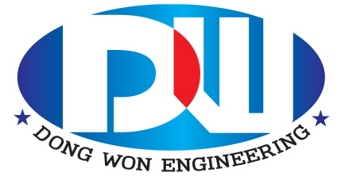
㈜동원엔지니어링은 반도체·FPD·OLED·2차전지 자동화 설비 전문 기업입니다.
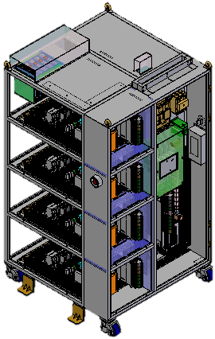
가공사업부는 동원엔지니어링의 금속 가공 전문 조직으로, 자동화·OEM·제어 사업과 연계하여 정밀 부품 제작 및 Turnkey 대응을 담당합니다.
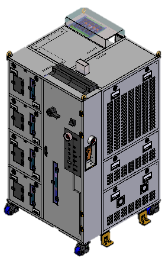
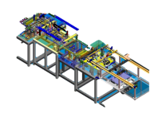
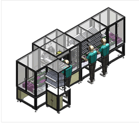
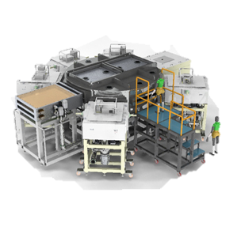
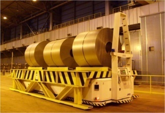
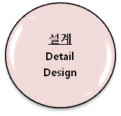
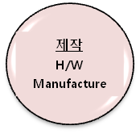
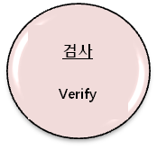
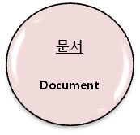
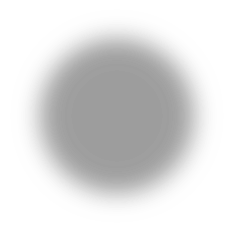
가공사업부는 위 프로세스 내 제작 단계(금속 가공·부품 제작)를 담당하며, 자동화·OEM·제어 조직과 협업하여 Turnkey 프로젝트를 수행합니다.
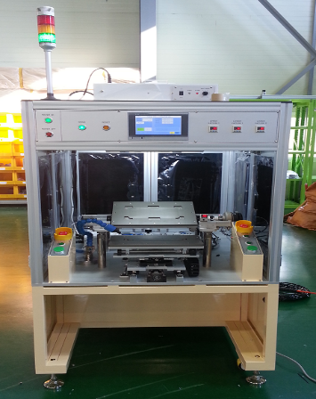
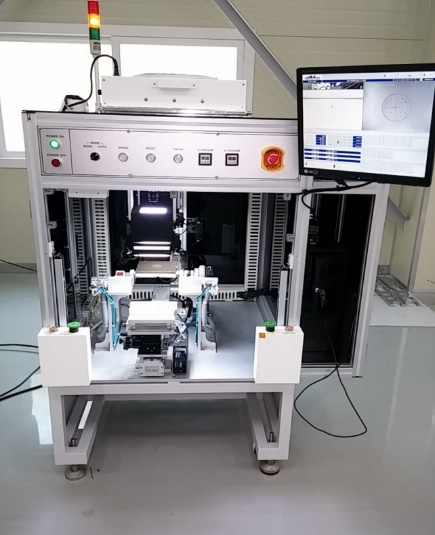
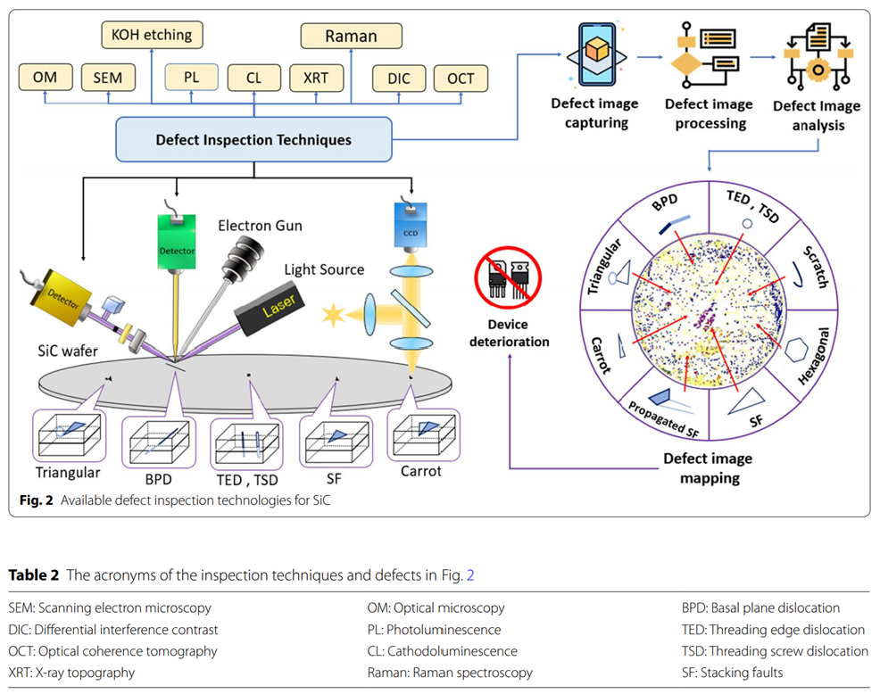
대표이사
경영지원 / 구매 / 제조기술 / 기술연구소 / 품질팀 / 고객지원
※ 가공사업부는 제조기술·생산 조직과 연계하여 운영됩니다.
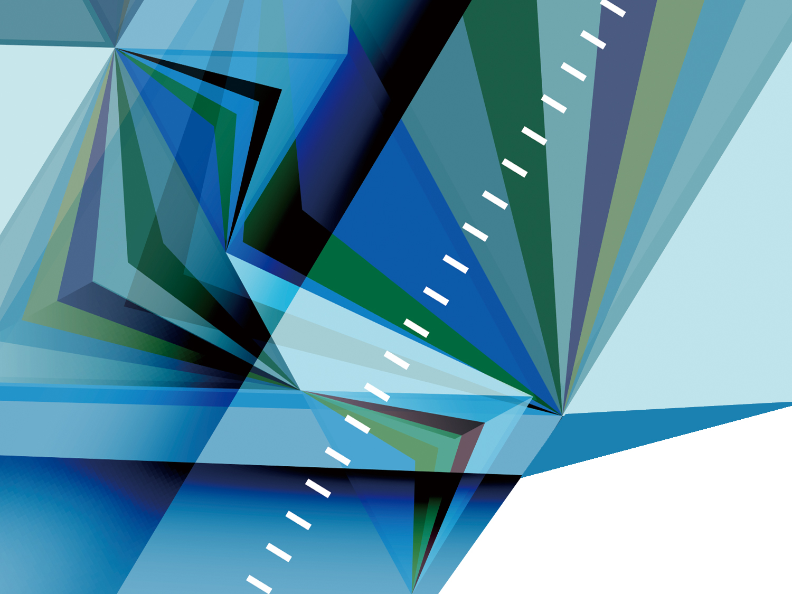
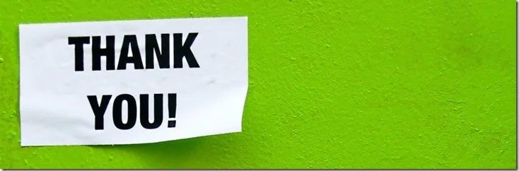
주소: 경기도 화성시 봉담읍 덕우리 150-12
회사명: ㈜동원엔지니어링
가공사업부: (전화·이메일 등 추가 시 여기에 기재)